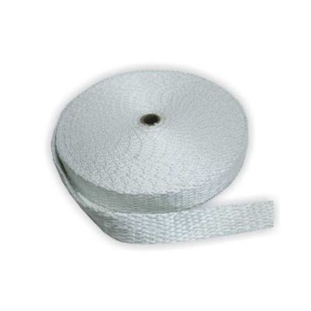
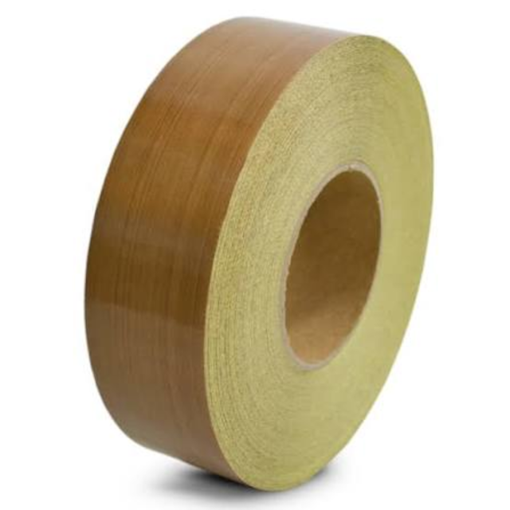
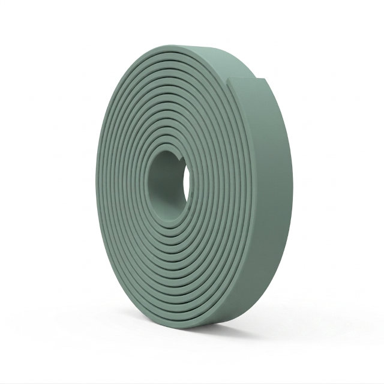
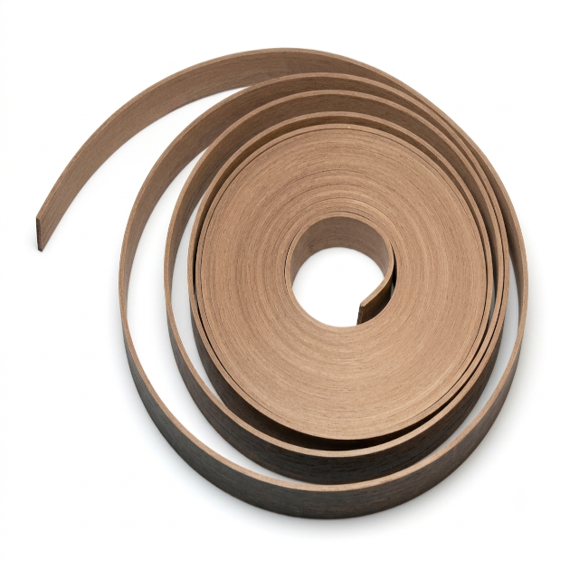

Fitas Industriais
Projetadas para proporcionar isolamento térmico, proteção contra desgaste, estanqueidade e guiamento de alta precisão em hastes e êmbolos. Oferecem excelente resistência mecânica e química, assegurando performance contínua em condições extremas de trabalho.
Variações Disponíveis

Fita de Fibra de Vidro
Excelente capacidade de isolamento térmico e elétrico, alta resistência ao calor e a chamas, ideal para vedação de tubulações e estufas industriais.
Solicitar Cotação
Fita de Fibra de Vidro com PTFE
Combina a resistência mecânica e térmica da fibra de vidro com a antiaderência e baixa fricção do PTFE, perfeita para seladoras e revestimentos antidesgastantes.
Solicitar Cotação
Fita Guia de Tecido Resinado / Polímero
Desenvolvida para absorver cargas radiais e prevenir o contato metal-metal em cilindros hidráulicos e pneumáticos, reduzindo a vibração e o desgaste mecânico.
Solicitar Cotação
Fita Guia PTFE + Bronze
Aditivada com bronze para garantir elevada resistência à compressão, baixo coeficiente de atrito estático e dinâmico, evitando o efeito *stick-slip* em altas pressões.
Solicitar CotaçãoFicha Técnica Geral - Fitas Industriais
| Especificação | Detalhes |
|---|---|
| Tipos de Fitas: | Isolantes Térmicas, Antiaderentes, Guias para Pistão/Haste e Fitas de Vedação Expandidas. |
| Materiais Utilizados: | Fibra de Vidro, PTFE Puro, PTFE Aditivado com Bronze/Carvão, Resina Fenólica com Tecido e Cargas Minerais. |
| Faixa de Temperatura: | -200°C a +260°C (Fitas de PTFE / Fibra com PTFE) / Até +550°C (Fitas de Fibra de Vidro PURA). |
| Coeficiente de Atrito: | De 0,04 a 0,10 (Modelos em PTFE e PTFE+Bronze) / Não aplicável para mantas puramente térmicas. |
| Resistência à Compressão: | Até 270 N/mm² (Fitas Guia Resina Fenólica/Tecido) e até 15 N/mm² (PTFE Bronze). |
| Compatibilidade Química: | Excelente resistência a óleos hidráulicos, fluidos sintéticos, solventes, ácidos e gases agressivos. |
| Aplicações Típicas: | Cilindros Hidráulicos e Pneumáticos, Máquinas Seladoras, Estufas, Dutos Térmicos e Equipamentos de Processamento Químico. |
| Normas Atendidas: | ISO 10766, DIN 24960, ASTM D3294 e fabricação sob medida (largura, espessura e comprimento). |